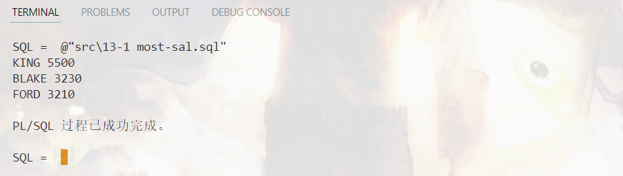
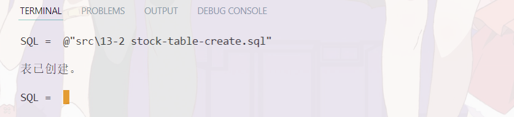
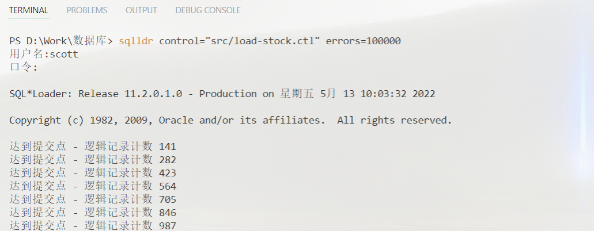
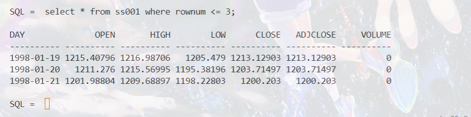
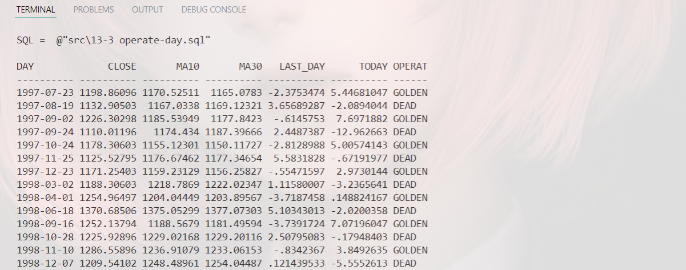
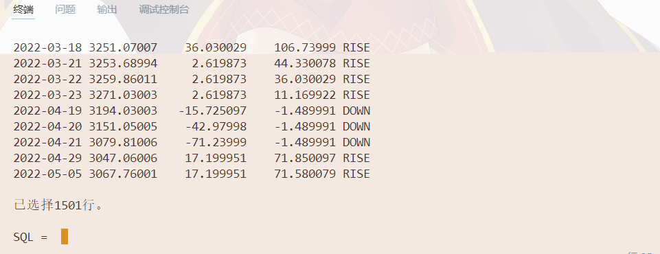
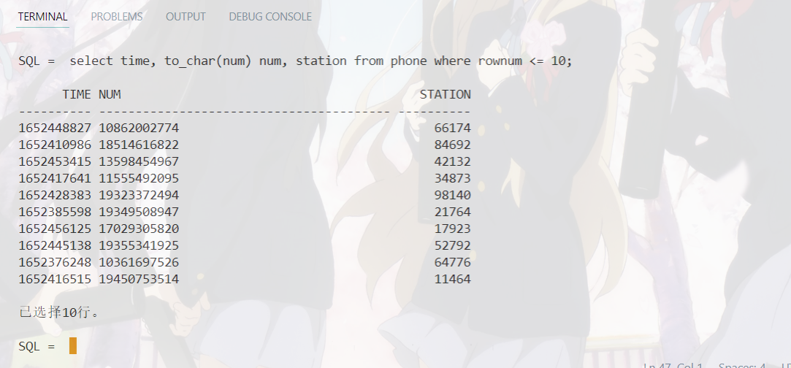
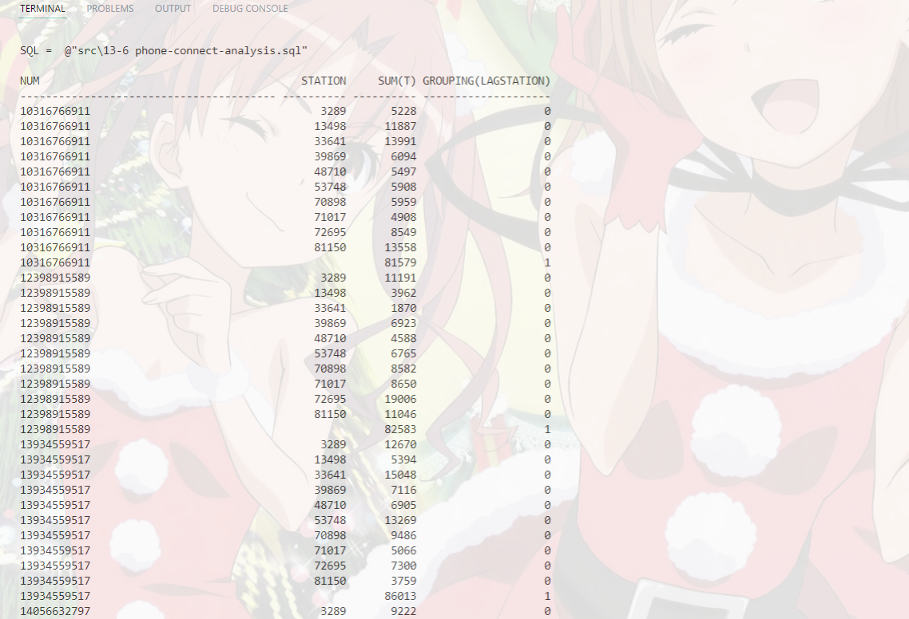
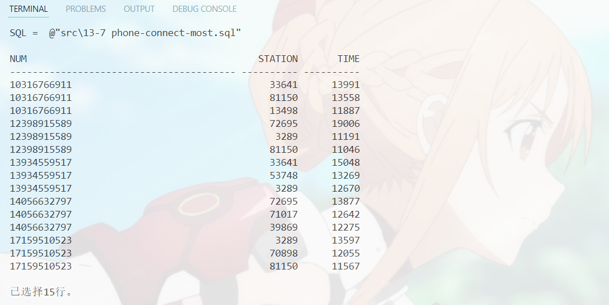

19336035 陈梓乐
set serveroutput on; declare cursor most_sal is select ename, sal from emp order by sal desc; sal emp.sal%type; ename emp.ename%type; i integer; begin open most_sal; for i in 1..3 loop fetch most_sal into ename, sal; dbms_output.put_line(ename||' '||sal); end loop; close most_sal; end; /

导入数据
create table ss001 ( day char(10), open number(12, 6), high number(12, 6), low number(12, 6), close number(12, 6), adjclose number(12, 6), volume number(12, 6) );

options(skip=1,rows=4096)
load data
infile "data/000001.SS.csv"
truncate
INTO table ss001
fields terminated by ","
(day,open,high,low,close,adjclose,volume)


找出黄金交叉与死亡交叉日期
with analysis1 as ( select day, close, avg(close) over ( order by day rows between 10 preceding and 1 preceding ) MA10, avg(close) over ( order by day rows between 30 preceding and 1 preceding ) MA30 from ss001 ), analysis2 as ( select day, close, MA10, MA30, lag(MA10 - MA30) over(order by day) LAST_DAY, MA10 - MA30 TODAY from analysis1 ), analysis3 as ( select day,close,MA10,MA30,LAST_DAY,TODAY, case when LAST_DAY < 0 and TODAY > 0 then 'GOLDEN' when LAST_DAY > 0 and TODAY < 0 then 'DEAD' else null end OPERATE from analysis2 ) select * from analysis3 where OPERATE is not null;

共210行，其中有105行是黄金交叉点。
找出连续涨跌三天的日子
with t1 as ( select day, close, close - lag(close) over (order by day) gradient from ss001 ), t2 as ( select day, close, min(gradient) over ( order by day rows between 2 preceding and current row ) min_gradient, max(gradient) over ( order by day rows between 2 preceding and current row ) max_gradient from t1 ) select day, close, min_gradient, max_gradient, case when min_gradient > 0 then 'RISE' when max_gradient < 0 then 'DOWN' else null end status from t2 where min_gradient * max_gradient > 0 and day >= '1997-07-05';

共1501行，其中连续涨3天的日子有864天。
建立表格
create table phone ( time number(16), num number(11), station number(5) );
导入数据
设有5个手机号，共10个基站，产生300条连接记录，导入代码如下：
import cx_Oracle, random con = cx_Oracle.connect('scott/tiger@127.0.0.1/orcl') # 手机号表 phone_number = [ int(1e10) + random.randint(0, 1e10) for i in range(5) ] # 基站表 station = [ random.randint(0, 1e5) for i in range(10) ] to_insert = [( random.randint(1652371200, 1652457600), random.choice(phone_number), random.choice(station)) for i in range(300) ] with open('data.csv', 'w') as f: for i in to_insert: f.write(','.join(map(str, i))) f.write('\n') cur = con.cursor() cur.bindarraysize = 10000 cur.setinputsizes(int, int, int) cur.executemany("insert into phone values (:1, :2, :3)", to_insert) con.commit()

处理数据
with analysis1 as ( select to_char(num) num, time, station, lag(station) over ( partition by num order by time ) lagstation, time - lag(time) over ( partition by num order by time ) t from phone ), analysis2 as ( select * from analysis1 where t is not null ) select num, lagstation station, sum(t), grouping(lagstation) from analysis2 group by rollup(num, lagstation);

找出连接时间前三的基站
with analysis1 as ( select to_char(num) num, time, station, lag(station) over ( partition by num order by time ) lagstation, time - lag(time) over ( partition by num order by time ) t from phone ), analysis2 as ( select * from analysis1 where t is not null ), analysis3 as ( select num, lagstation station, sum(t) s, grouping(lagstation) g, rank() over (partition by num order by sum(t) desc) r from analysis2 group by rollup(num, lagstation) ) select num, station, s time from analysis3 where r <= 4 and r >= 2;
